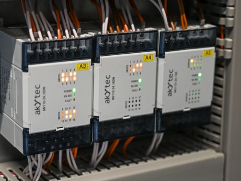

PROFINET
Comunicação Ethernet industrial usada entre controladores, módulos de entrada e saída, acionamentos e outros equipamentos.
Permite trocar dados de processo e informações de diagnóstico. Suas opções de comunicação atendem a diferentes necessidades, desde automação geral até aplicações com sincronização mais exigente.
O desempenho depende dos dispositivos, da configuração da rede e do perfil de comunicação escolhido.
Detalhes técnicos
- Cabeamento
- Usa Ethernet 100BASE-TX em cabo industrial Cat5e verde, de 4 ou 8 fios; Tipo A, B e C atendem instalações fixas, flexíveis e móveis. Também pode usar fibra (POF, HCS, multimodo/monomodo) ou Wi-Fi. Conectores: RJ45 IP20, push-pull, M12 D-coded IP65/67 e SC-RJ/POF. Topologias: estrela, árvore, linha e anel MRP; PRP é outra opção de redundância.
- Sinais elétricos
- 100BASE-TX usa 4B5B e MLT-3 em full-duplex a 100 Mb/s. A alimentação costuma ser separada em 24 Vcc; Ethernet-APL (10BASE-T1L) pode levar dados e energia pelo mesmo par e atender a aplicações Ex. Cabo blindado e aterramento ajudam contra ruído; PROFIsafe atende à segurança funcional.
- Comunicação
- NRT usa TCP/IP para configuração e diagnóstico; RT envia dados priorizados; IRT reserva intervalos sincronizados para tráfego crítico. O modelo envolve I/O Controller, I/O Device e I/O Supervisor; DCP é usado para descoberta. Quadros RT usam EtherType 0x8892 e incluem FrameID, dados cíclicos, APDU Status (CycleCounter, DataStatus e TransferStatus) e FCS CRC-32.
- Desempenho
- Taxas usuais: 100 Mb/s e 1 Gb/s. O cobre permite até 100 m por segmento; a fibra vai de cerca de 2 km em multimodo a dezenas de quilômetros em monomodo. RT costuma operar em ciclos de 1–10 ms; IRT pode partir de 31,25 µs, com jitter abaixo de 1 µs. É usado principalmente em Campo e Controle, integrado à Supervisão.